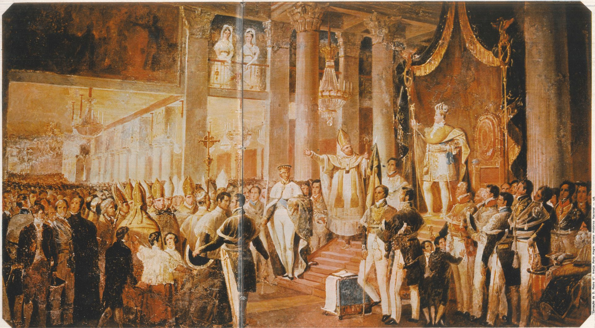
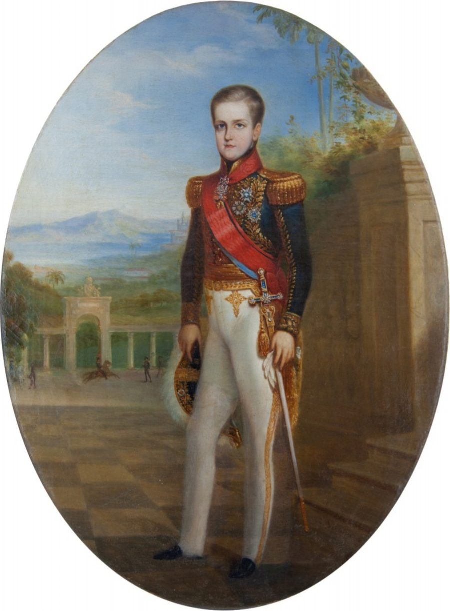
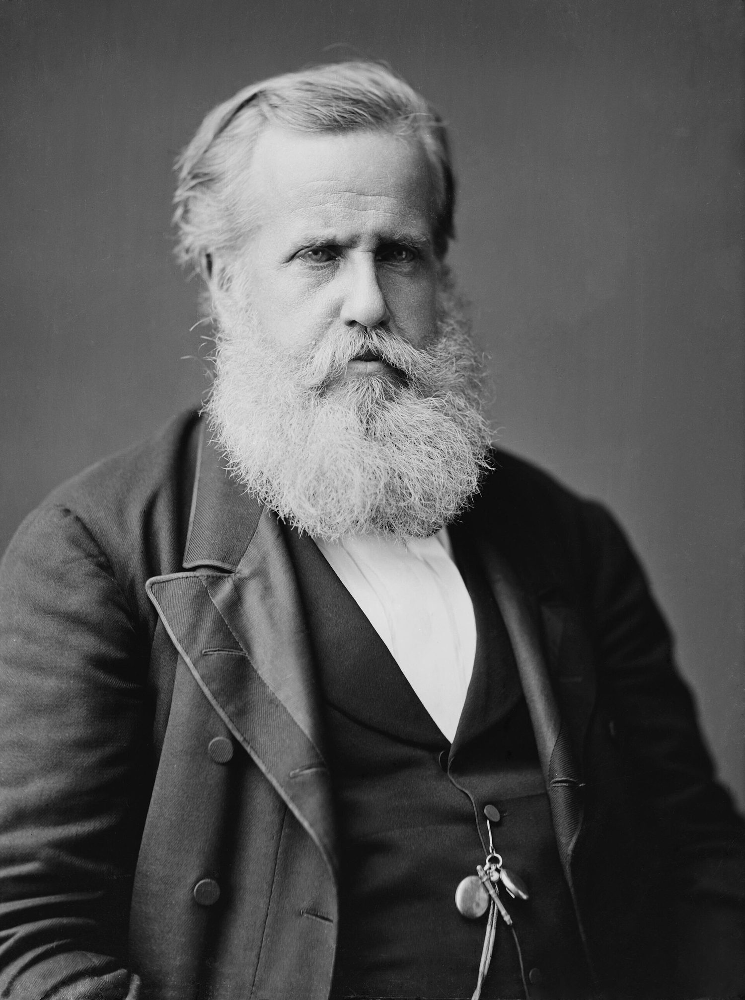
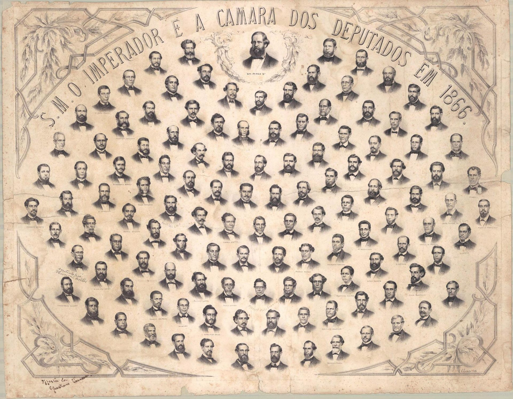
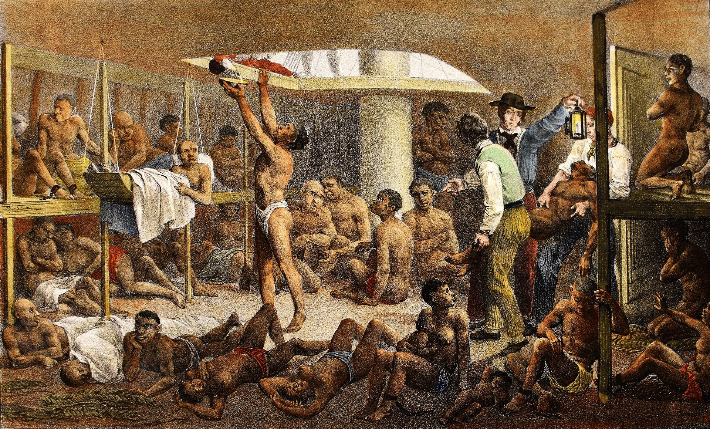
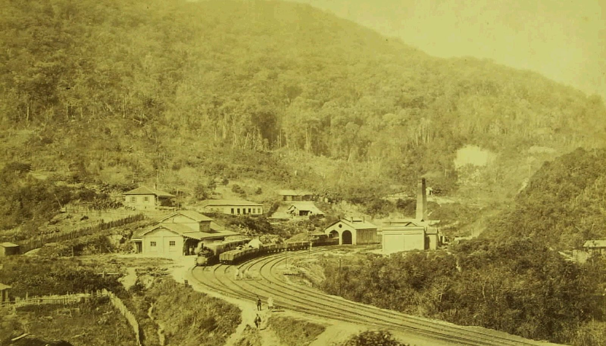
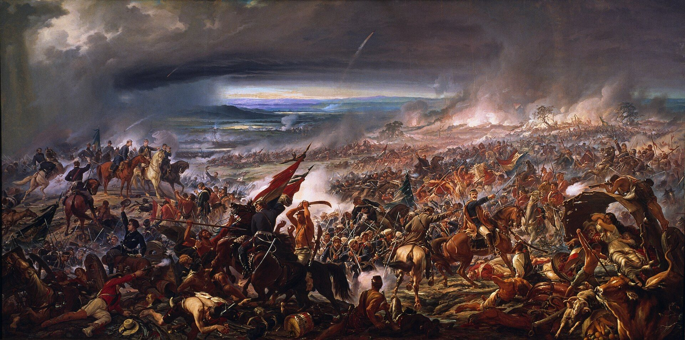

Trabalho de História · Professora Rita
Brasil Império O Segundo Reinado
Meio século de monarquia: da maioridade de D. Pedro II à Proclamação da República
Davi Matheus · Juan Bento · Lucas Godoy · Kaique · Pedro Lucas
02 O ponto de partida · 1831–1840
Um Império à beira da divisão

03 Consolidação · 1840–1841
Um imperador de 14 anos

04 O imperador · 1825–1891
Quem foi D. Pedro II
- 1Criado para reinarPerde a mãe em 1826 e o pai abdica em 1831 [10]
- 2FamíliaCasa-se em 1843 com Teresa Cristina; herdeira: Isabel
- 3Ciência e fotografiaCompra um daguerreótipo em 1840; apoia o IHGB
- 4ViagensEuropa (1871) e EUA (1876); Isabel fica como regente
- 5Uma imagem construídaO “rei sábio” também era propaganda da monarquia [17]
05 O sistema político
Quatro poderes e um imperador no centro
A Constituição de 1824 criou um quarto poder, o Moderador, exercido só pelo imperador [2]

06 Os partidos · 1840–1889
Luzias contra saquaremas
Partido LiberalOs “luzias”
Apelido vem de Santa Luzia (MG), onde foram derrotados em 1842 [16]
Queriam mais autonomia para as províncias
Partido ConservadorOs “saquaremas”
Apelido vem de Saquarema (RJ), terra de líderes do partido
Defendiam o poder concentrado no Rio e a ordem
Na prática, parecidosOs dois eram partidos de proprietários. Um ditado da época, atribuído ao político Holanda Cavalcanti, dizia que nada se parecia mais com um saquarema do que um luzia no poder.
Conciliação (1853–1856)O marquês de Paraná governa com nomes dos dois partidos [8]
07 Eleições e cidadania
Quem podia votar?
- 1Voto pela rendaSó homens livres com renda mínima; mulheres e escravizados, nunca [2]
- 2Eleição em dois grausOs votantes escolhiam eleitores, que escolhiam os deputados
- 3“Eleições do cacete”Em 1840, violência e fraude marcaram a votação
- 4Lei Saraiva (1881)Voto direto, mas os novos eleitores precisavam saber ler [5]
08 Consolidação · 1842–1850
A pacificação das províncias
- 1Revoltas liberais (1842)São Paulo e Minas se levantam contra os conservadores [14]
- 2Fim da Farroupilha (1845)Acordo de Ponche Verde, com anistia aos rebeldes
- 3Praieira (1848–1850)Pernambuco: a última grande revolta provincial [18]
- 4Caxias, o pacificadorVenceu as revoltas de 1840 a 1845; duque em 1869
09 Apogeu · a economia
O café, motor do Império

10 Apogeu · a escravidão
O fim do tráfico africano
- 1Proibido só no papelA lei de 1831 não foi cumprida; os navios seguiram chegando
- 2Bill Aberdeen (1845)A Marinha britânica passa a apreender navios negreiros
- 3Lei Eusébio de Queirós (1850)Fim do tráfico de africanos para o Brasil [3]
- 4Tráfico internoEscravizados vendidos do Norte para o café do Sudeste [18]
- 51,5 milhão em 1872No campo e nas cidades, como os “ganhadores” [15]
11 Apogeu · terra e trabalho
Quem trabalha e quem é dono da terra
- 1Lei de Terras (1850)Terra pública só podia ser obtida por compra [4]
- 2Quem ficou de foraPosseiros pobres, libertos e os futuros imigrantes
- 3Parceria (1847)Colonos europeus na fazenda Ibicaba, do senador Vergueiro
- 4Revolta de Ibicaba (1856–1857)O suíço Thomas Davatz denuncia dívidas e abusos [12]
- 5Imigração paga (anos 1880)Italianos chegam para o café paulista [11]

12 Apogeu · modernização
A era Mauá
- 1Tarifa Alves Branco (1844)Importados mais caros, estímulo a fábricas locais [14]
- 2Dinheiro livre após 1850Capitais do tráfico procuram novos negócios
- 3Barão de MauáEstaleiro, banco, gás no Rio e a 1ª ferrovia (1854) [7]
- 4Telégrafo e cabo submarinoNotícias da Europa em horas, a partir de 1874
Ferrovias9.583km em 1889
(eram 14,5 km em 1854)
13 Apogeu · cultura e ciência
Uma cultura para a nação
- Poesia e romanceIndianismoGonçalves Dias e José de Alencar (Iracema, 1865)
- PinturaVictor MeirellesPrimeira Missa no Brasil, 1860
- MúsicaCarlos GomesÓpera Il Guarany, Milão, 1870
- LiteraturaMachado de AssisMemórias póstumas de Brás Cubas, 1881
O imperador mecenasBolsas, prêmios e o Instituto Histórico: arte e história ajudavam a criar uma imagem do Brasil como nação [17]
14 Política externa · 1851–1865
O Império no Rio da Prata

15 A Guerra do Paraguai · 1864–1870
A maior guerra da América do Sul
- 1Tríplice Aliança (1865)Brasil, Argentina e Uruguai contra o Paraguai [13]
- 2Riachuelo (1865)A vitória naval que bloqueia os rios
- 3Até Cerro Corá (1870)Tuiuti, Humaitá e a morte de Solano López
- 4O preço da vitóriaDívida externa e um Exército com voz política
≈ 139 milbrasileiros mobilizados
≈ 50 milbrasileiros mortos
Estimativas mais citadas; os números variam conforme a fonte Apresentação completa: Guerra do Paraguai16 Crise · a abolição
O longo caminho da abolição
- Fim do tráficoNenhum africano pode mais ser trazido escravizado
- Ventre LivreFilhos de escravizadas nascem livres, mas podiam servir ao senhor até os 21 anos
- Ceará e AmazonasProvíncias abolem a escravidão antes do país
- SexagenáriosLiberdade aos 60 anos, ainda com anos de serviço extra
- Lei ÁureaEscravidão extinta, sem indenização nem apoio aos libertos [6]
Abolicionistas e resistência [1]
Fugas em massa, quilombos e jornais pressionam o governo

17 Crise · 1870–1889
O Império perde seus apoios
- 1Republicanos (1870)Manifesto e, em 1873, o Partido Republicano Paulista [11]
- 2Igreja (1872–1875)Questão Religiosa: bispos presos por desobedecer ao governo
- 3Exército (1883–1887)Questão Militar: oficiais punidos por falar de política
- 4Fazendeiros (1888)Abolição sem indenização afasta parte da elite agrária
- 515 de novembro de 1889Deodoro proclama a República; a família imperial vai para o exílio [18]
18 Conclusão
Meio século de Império em três tempos
- ConsolidaçãoMaioridade, centralização e fim das revoltas
- ApogeuCafé, fim do tráfico, ferrovias e vitórias no Prata
- CriseAbolição, republicanos, Igreja e Exército contra o trono
O que ficou
- Território unidoO país não se dividiu
- Economia do caféExportação e primeiras ferrovias
- Cidadania restritaPoucos votavam [9]
- Abolição tardiaSem terra nem apoio aos libertos
Síntese do grupo: um Império estável e unido, mas construído sobre a escravidão e para poucos [16]D. Pedro II morreu no exílio, em Paris, em 1891 · foto de Nadar